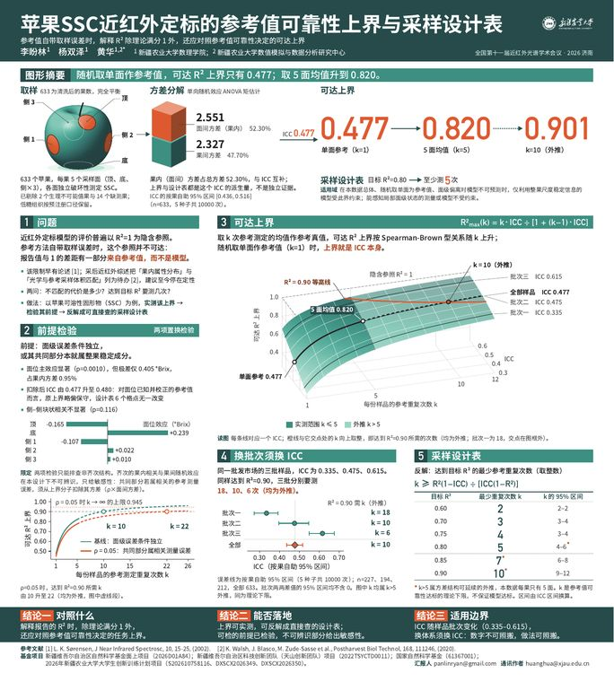
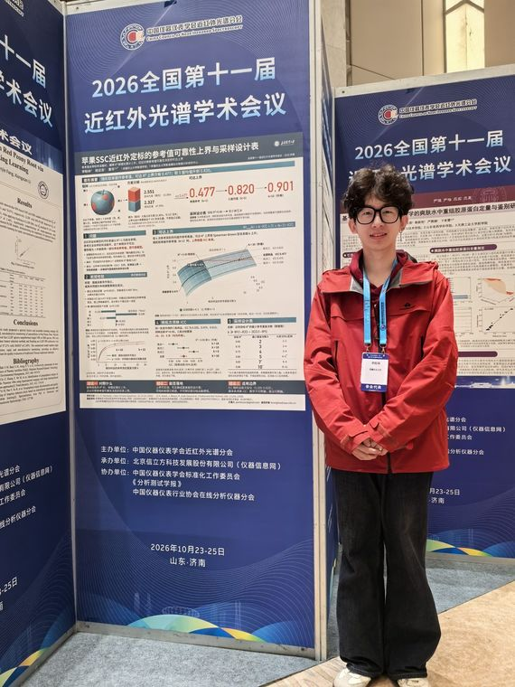
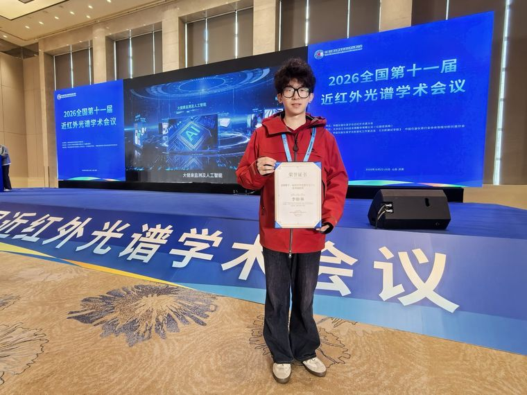

The 11th National Conference on Near-Infrared Spectroscopy全国第十一届近红外光谱学术会议
The conference was organized by the NIR Spectroscopy Branch of the China Instrument and Control Society. I presented the poster “Upper bound of reference-value reliability and a sampling design table for near-infrared calibration of apple SSC”, which received the Excellent Poster Award.
The work asks how high the R² of an apple SSC calibration can go when the reference value itself carries sampling error, and how many faces of each fruit need to be measured. With 633 apples measured on 5 faces each, the attainable upper bound is only 0.477 when one random face serves as the reference; the mean of 5 faces raises it to 0.820. The poster also gives a design table that reads off the number of faces to measure for a target R².
会议由中国仪器仪表学会近红外光谱分会主办。我以墙报展示论文《苹果 SSC 近红外定标的参考值可靠性上界与采样设计表》，获评“优秀墙报奖”。
这项工作回答两个问题：参考值本身带有取样误差时，苹果可溶性固形物（SSC）近红外定标的 R² 最高能到多少；每个果子要测几个面。基于 633 个苹果、每果 5 个果面的实测数据，随机测一个果面作参考值时，可达上界只有 0.477；取 5 个果面的均值，可提高到 0.820。墙报还给出了采样设计表，按目标 R² 直接查出每个果子要测几个面。



Files资料下载
- Poster墙报PDF · 2.9 MB Download下载 Mirror 1镜像 1 Mirror 2镜像 2
- Conference paper会议论文PDF · 0.4 MB Download下载 Mirror 1镜像 1 Mirror 2镜像 2
Publication entry [12] →论文条目 [12] → School news report ↗学院报道 ↗